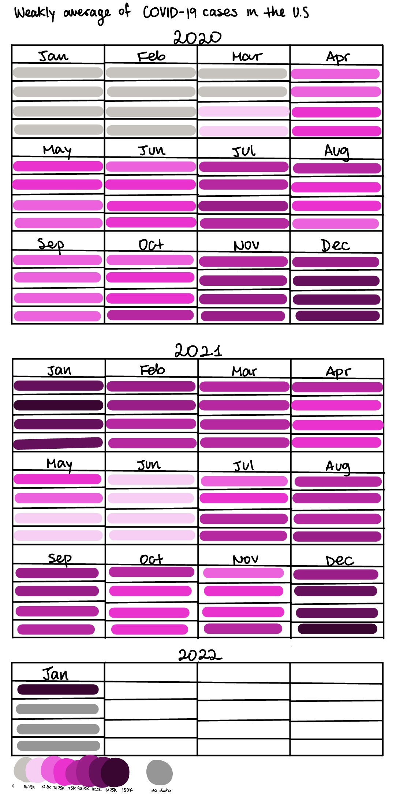
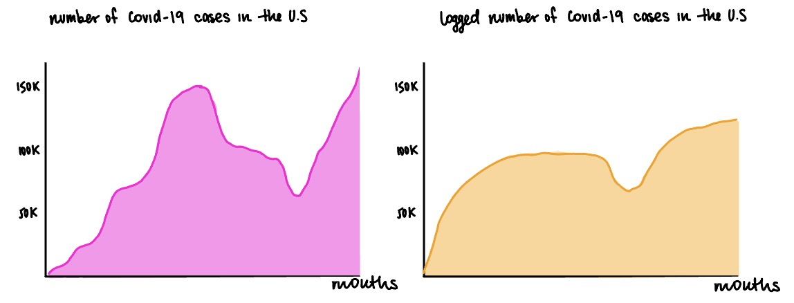
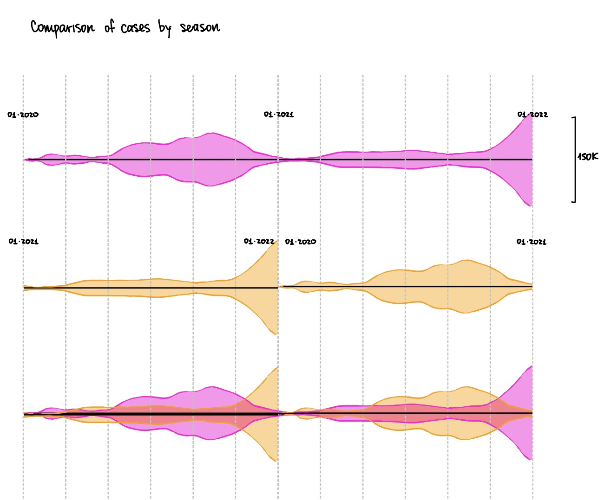
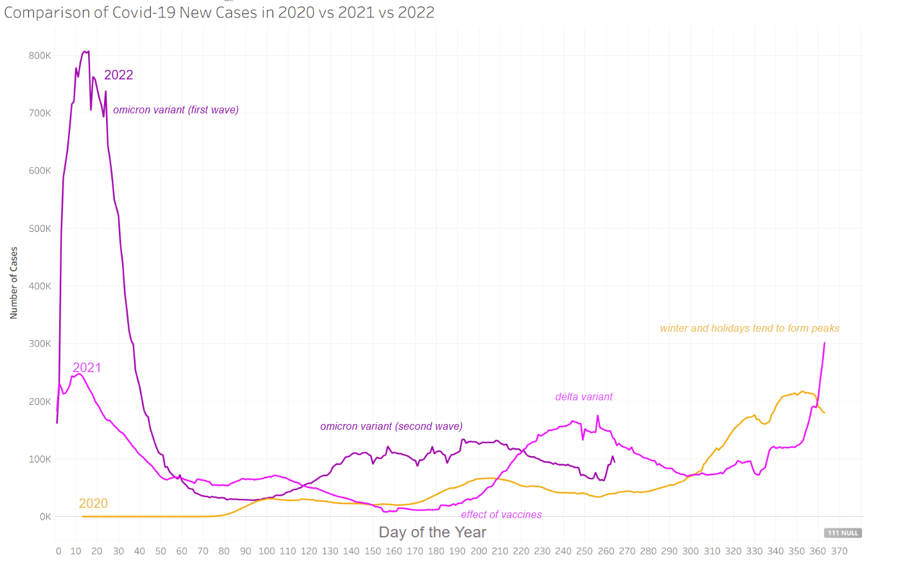
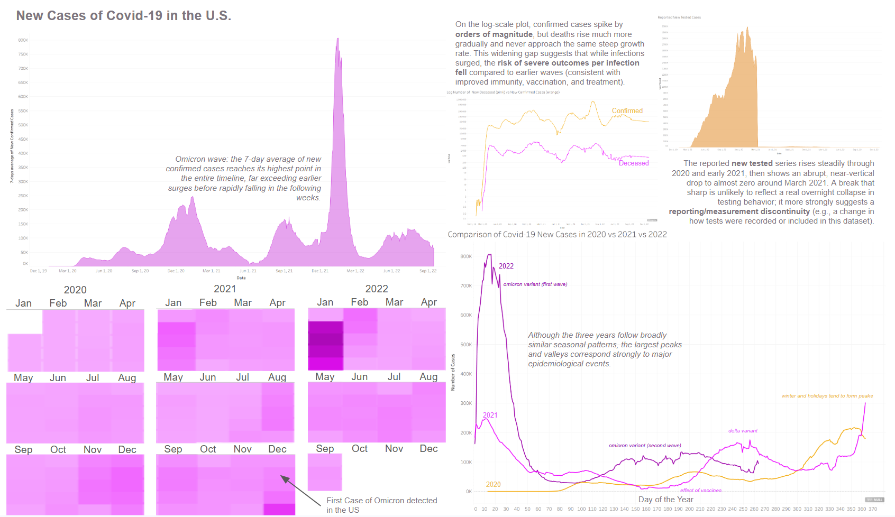

Assignment 3: Visualization Critique + Redesign
By Gabriela Miranda
Task 1: A few insights from the visualization
- It's showing U.S. new COVID-19 cases over time, laid out as a spiral “calendar”: months are around the circle (Jan/Apr/July/Oct), and each loop corresponds roughly to a year (labels like 2020, 2021, 2022 appear on the spiral).
- The biggest surge is around January 2022 (the dramatic outward “spike”), visually signaling how extreme the Omicron wave was compared to earlier periods.
- You can see a recurring winter pattern: case levels tend to rise heading into late fall/winter (around Oct → Jan) and ease off after.
- The band and the annotated “7-day average” suggest the chart is emphasizing a smoothed trend, not just noisy day-to-day counts.
Task 2: Design critique
This design is striking and memorable, and the spiral layout does help convey a “year-over-year seasonal cycle” by literally wrapping time around the calendar. It also draws attention to the key takeaway the NYT likely wanted: the Omicron peak dwarfed prior waves, which the dramatic outward flare makes impossible to miss. The labeling of months (Jan/Apr/July/Oct) and year markers gives you a foothold for orientation, and the highlighted “7-day average” nudges readers toward interpreting the curve as a trend rather than daily volatility.
But the same aesthetic choices also make the data harder to read precisely. The spiral form distorts comparison: judging whether (say) summer 2021 is higher than winter 2020 requires mentally “unwinding” the curve, and the changing direction/curvature makes magnitude comparisons less intuitive than a simple line chart. The scale cue (0 → 150K cases) is easy to miss and doesn't clearly anchor the whole shape, so the viewer may understand “bigger vs smaller” without confidently reading how much bigger. Also, on the same note, I still don't understand whether the scale means the max is 150k or if I should extrapolate and mentally calculate what is going on at each point. Overall, it's excellent for conveying a headline takeaway and seasonality, but it sacrifices exact values and clean comparisons for visual impact.
Task 3: Sketches
Sketch 1: Calendar-style heatmap layout

Motivation / what problem it fixes
- The original spiral is memorable but makes precise comparisons hard (curved path, unclear scale).
- I wanted a design that makes seasonality and year-to-year patterns instantly visible without needing to “unwind” a spiral.
Design decisions
- Used a calendar layout (months as blocks) because it's a familiar mental model for time.
- Encoded intensity with a single sequential color ramp so the viewer can compare weeks quickly (lighter = fewer cases, darker = more).
- Separated years into sections (2020, 2021, 2022) to make between-year comparisons easier.
What I hoped it would communicate
- Where the hotspots are (e.g., winter surges) and whether those hotspots repeat across years.
- The overall rhythm of the pandemic (waves rather than smooth growth).
What worked well
- You can spot seasonal clustering and “wave blocks” immediately.
- Doesn't distort time: weeks are visually uniform, so the chart is good for comparing “this week vs that week.”
What didn't work / limitations
- It's still mainly qualitative: it shows relative intensity, not exact values.
Next exploration
- Add a few anchor annotations (“Omicron peak”).
- Consider using a colorblind-friendly palette and ensuring the lightest/darkest are reserved for true extremes.
Sketch 2: Linear vs log scale comparison

Motivation / what problem it fixes
- In a linear scale, big waves (especially Omicron) dominate and make earlier waves look small.
- I wanted to test whether a log scale makes earlier surges more legible while keeping Omicron visible.
Design decisions
- Put linear and log views side-by-side so the viewer learns what each scale emphasizes.
- Kept the overall form consistent (same smoothing idea) so the comparison is about scale, not style.
- Used a filled area to preserve the “mass/impact” feel from the original, but with clearer axes.
What I hoped it would communicate
- Linear: the raw, emotionally compelling point: “Omicron dwarfed everything.”
- Log: the analytical point: earlier waves were still large, and the differences between waves are easier to compare.
What worked well
- Makes the “tradeoff” explicit: one chart is good for magnitude, the other for comparative structure.
- Log view supports the critique that the original makes comparisons difficult: the log helps reveal the structure that the spiral obscures.
What didn't work / limitations
- Log scale can confuse people.
Next exploration
- Add a note: “Log scale = equal vertical distance means multiplicative change.”
- Try a thin line instead of a filled area in the log version to reduce the feeling that the area itself is the quantity (since area can mislead perception).
Sketch 3: Ridgeline / seasonal alignment across years

Motivation / what problem it fixes
- The spiral tried to show cyclical time, but it distorted magnitude and made year-to-year comparison hard.
- I wanted a form that emphasizes seasonality across multiple years while preserving comparability through shared alignment.
Design decisions
- Used a ridgeline / banded layout where each year (or period) is aligned to the same seasonal timeline.
- Added repeating January markers and vertical guides to reinforce the seasonal framing.
- Used different colors to distinguish conditions/years (and visually separate overlapping periods).
What I hoped it would communicate
- Whether cases consistently rise in the same season (winter peaks).
- The shape of waves across years (broad vs sharp peaks), not just a single headline maximum.
What worked well
- Seasonality is more explicit than in a standard timeline chart: you can compare “winter vs summer” patterns quickly.
- The repeated seasonal alignment is closer to what the spiral wanted to do, but in a more systematic, grid-like way.
What didn't work / limitations
- It's visually dense: overlapping filled shapes can become hard to parse without a strong legend and consistent baseline.
- The vertical scale is not as immediately readable as a standard time series; it risks becoming more “pattern” than “measurement.”
Next exploration
- Simplify: use small multiples by year (one ridgeline per year) with a shared scale.
- Consider switching from filled bands to lines to avoid overlap confusion.
Task 4: Final Design
Final redesign (seasonal alignment by day-of-year)

Task 4: Write Up
My final redesign focuses on making seasonality and between-year comparison of COVID-19 case trends immediately readable. The original spiral was visually striking but made it difficult to compare magnitudes and timing across waves because the geometry distorted distance and scale. In contrast, my chart aligns 2020, 2021, and 2022 on a shared day-of-year axis so the viewer can directly compare when peaks occur and how large they are across years.
The message I want to convey is that case surges show a strong seasonal component—all years rise toward winter—but the magnitude and shape of peaks differ sharply: 2022 is dominated by an extreme early-year Omicron surge, while 2021 shows a prominent late- summer/early-fall Delta wave and a winter rise, and 2020 ramps upward into winter from a relatively low early baseline. I also use brief annotations (“Delta,” “Omicron,” “effect of vaccines,” “winter and holidays tend to form peaks”) to connect the visible patterns to plausible real-world context without forcing the viewer to infer the story from the lines alone.
In terms of encodings, the design uses line marks because they are well-suited for showing continuous change over time; position on a common y-axis communicates magnitude, and position on the x-axis (day of year) supports seasonal alignment. Color hue distinguishes years and the direct year labels reduce reliance on a legend, improving readability and reducing visual scanning. The day-of-year transformation is a deliberate data transformation: it facilitates comparison of seasonal timing but it also downplays within-year chronology (e.g., policy changes, reporting changes, and the exact sequence of events across calendar years), and it can make 2022 look “complete” even if the dataset ends before the full year.
Overall, this redesign addresses my critique by replacing the spiral's geometric distortion with a more interpretable axis system and by adding targeted annotations to clarify takeaways. The critique-by-redesign process also surfaced a tradeoff: maximizing comparability across years required sacrificing some narrative continuity and introducing contextual labels that can guide interpretation but may oversimplify complex causal factors.
Extra
I accidentally didn't see that the task required a single chart and I made a dashboard initially and I wanted to share it with the teaching staff anyways for feedback.
